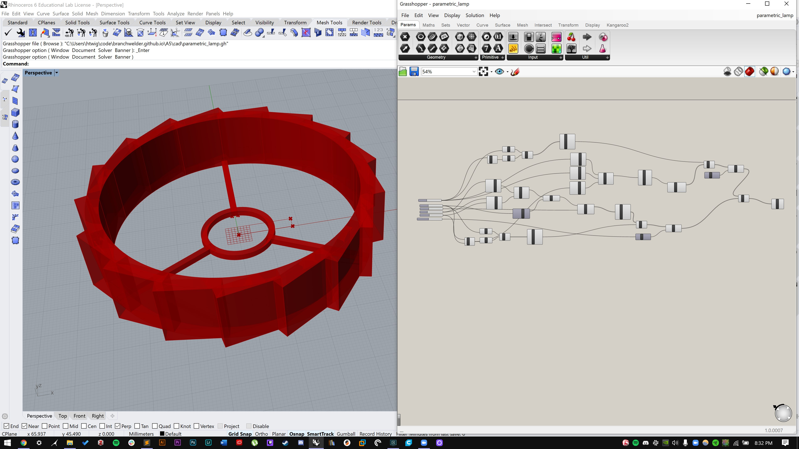
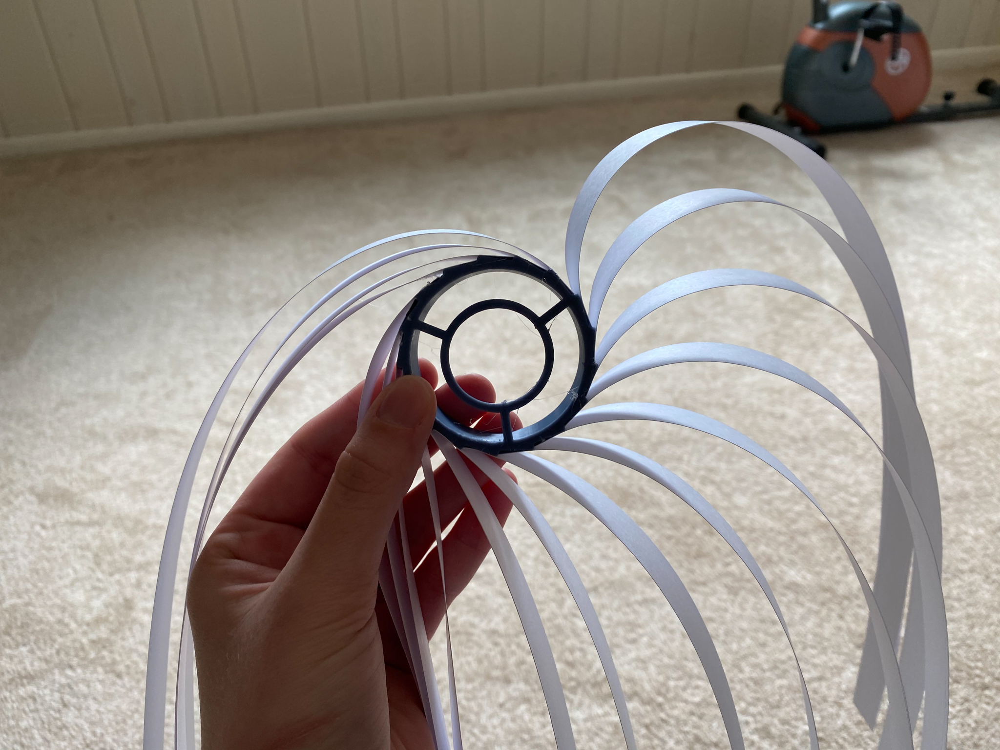
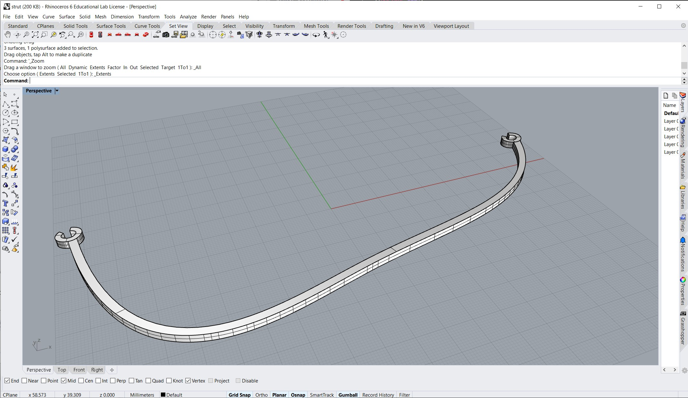
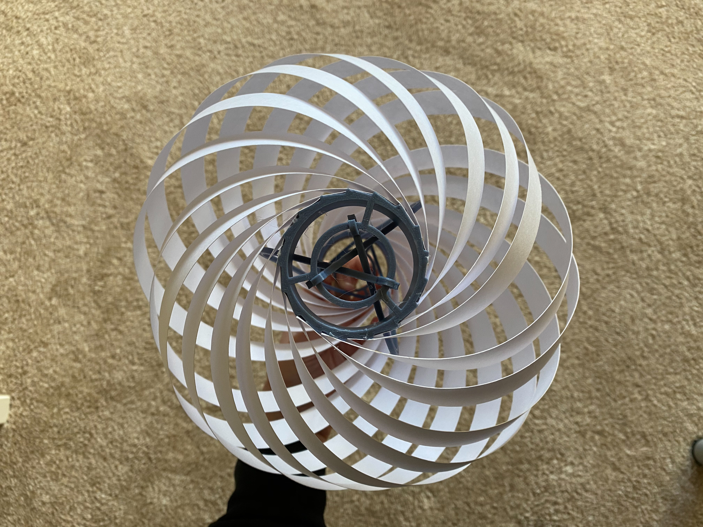
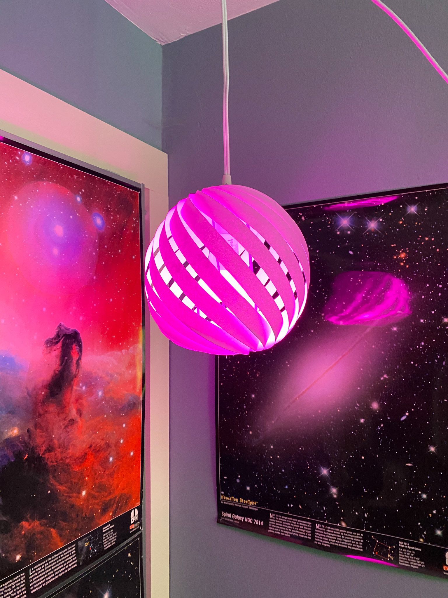
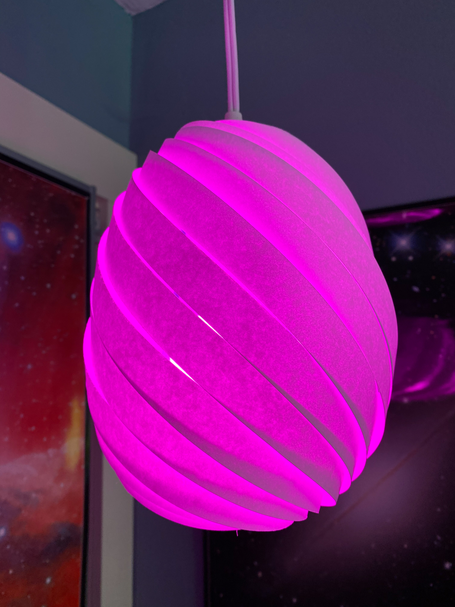
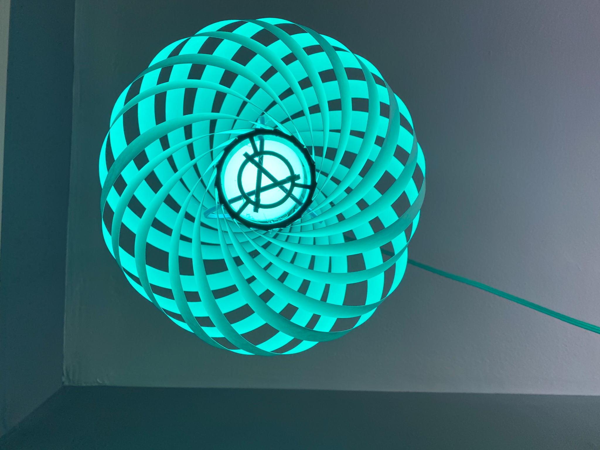
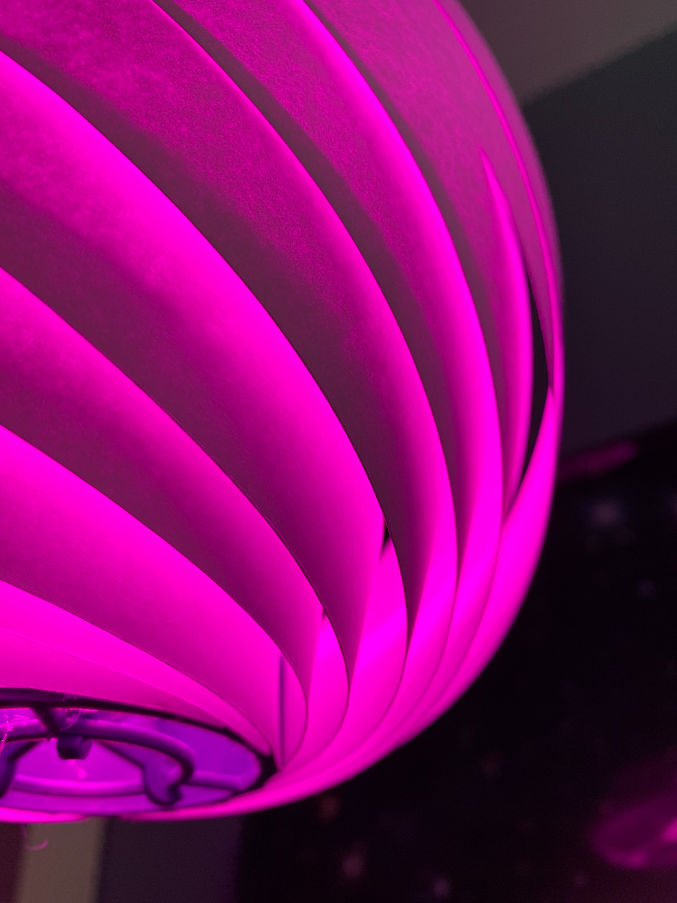

Lamp part two!
I made a Grasshopper definition for the internal 3D printed part of my lamp. Files found here. Now I can easily change the dimensions of things to figure out which one works best with the paper I have.
Since part one, I bouught larger paper so I could make a lamp that would fit my Philip's Hue bulb. I decided to try printing another top and bottom piece of a slightly different size than I had used before to accomodate slightly wider strips. I assembled the lamp like I did in part one:
Besides being larger, the paper I used was also not as thick as the cardstock I used last week and it was a bit flimsier. I expected this, and I CADed an internal strut that I could use to hold the lamp's shape.
I printed three of the struts and assembled the lamp all together. I glued the struts to the top piece (I could eventually design a better attachment that would not require glue) and left the bottom piece free to spin, which allows the lamp to shapeshift by twisting the bottom 3D printed part. The internal struts are not very rigid which allows the lamp to expand and contract.
    